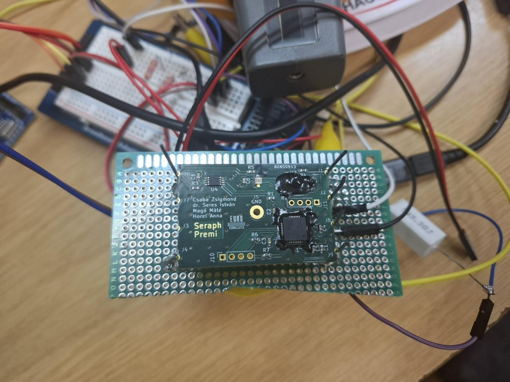
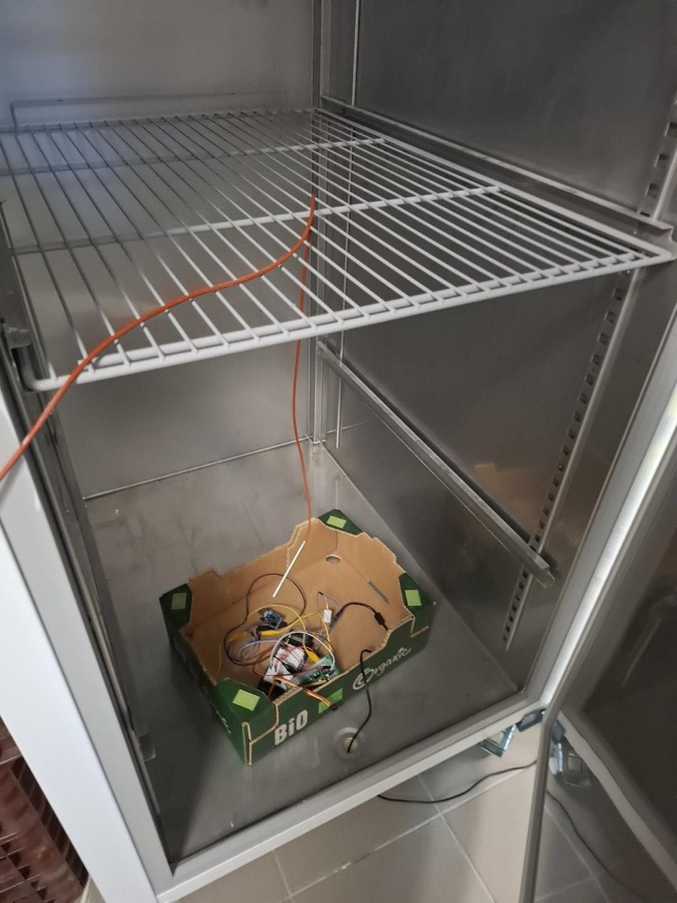

A kísérlet
A kérdésünk egyszerű: ha két egyforma hőmérőt kétféle bevonat takar, másképp reagálnak-e a napfényre és az árnyékra a világűrben?
Mit mérünk
A panelen két azonos típusú MCP9808 digitális hőmérő van. Az egyiket fekete epoxi (Strongbond 53) borítja, a másikat nagyjából 2 milliméter vastag átlátszó epoxi (Strongbond 110).
Amikor a műhold a Föld árnyékából kilép a napfényre, a panel melegedni kezd, amikor belép az árnyékba, hűlni. Ezek a hőmérséklet-tranziensek a legérdekesebb szakaszok. Feltételezésünk az volt, hogy a két bevonat más-más módon nyeli el a fényt és adja le a hőt. Ha ez így van, a különbségnek itt kell látszania, és ezt akarjuk pályán megvizsgálni.
A fekete bevonatú hőmérő a referencia, az átlátszó epoxi alatti a vizsgált minta. Azt követjük, hogyan változik a kettő különbsége a küldetés elejétől a végéig. Ebből a bevonatok hőtehetetlenségére és az átlátszó epoxi esetleges UV-öregedésére lehet következtetni.
A harmadik szenzor egy OPT3002 fénymérő. Ebből látszik, mikor süt a Nap a panelre, és mikor van árnyékban, így a hőmérsékleti görbéken meg tudjuk jelölni az árnyékba lépést és a kilépést.
A panel
| Méret | 45 × 30 × 3 mm |
|---|---|
| Tömeg | 5,5 g |
| Hely a műholdon | a HUNITY kinyíló kísérleti panelje |
| Hőmérők | 2 db MCP9808 digitális hőmérő (az egyik fekete epoxi, a másik ~2 mm átlátszó epoxi alatt) |
| Fényszenzor | OPT3002 |
| Mikrokontroller | STM32F103 (C8T6) |
| Tervezés, fejlesztés | KiCad (nyák), STM32CubeIDE (program) |
| Mérési ütem | 60 másodpercenként; 2026 szeptemberétől 10 másodperces üzemmódban |
Az MCP9808 egy digitális hőmérő IC: maga méri a hőmérsékletet, és kész számértéket ad tovább a mikrokontrollernek. Nem termoelem.
Hogyan készült
A nyákot KiCadben terveztük, a programot STM32CubeIDE-ben írtuk. A panelen külön csatlakozó van a programozáshoz és a hibakereséshez, egy másikon keresztül pedig a műholddal kommunikál. Az első programokat próbapanelen, vezetékekkel összekötött alkatrészekkel teszteltük.





Tesztelés a földön
A kész paneleket szélsőséges körülmények között is kipróbáltuk. 2024 decemberében a Magyar Agrár- és Élettudományi Egyetem (MATE) laborjában ipari fagyasztóba tettük őket, ahol a legalacsonyabb hőmérséklet −35,5 °C volt. Sütőben 100 °C-on is teszteltük a paneleket. A szenzorok értékeit kalibrált műszerekkel vetettük össze. Megmértük a panel tömegét és az áramfelvételét is nyugalmi állapotban és legnagyobb terhelésnél, hogy igazoljuk, megfelel a műhold követelményeinek.
A fényszenzor tesztelése közben egy régi kérdésre is választ kaptunk: igen, a hűtő belsejében tényleg lekapcsol a lámpa, amikor becsukjuk az ajtót.
A pályán lévő panelnek van egy földi referenciapéldánya is. Ezzel össze tudjuk vetni, hogy az űrből érkező adatok egyes jellegzetességei a panel saját működéséből erednek-e.
